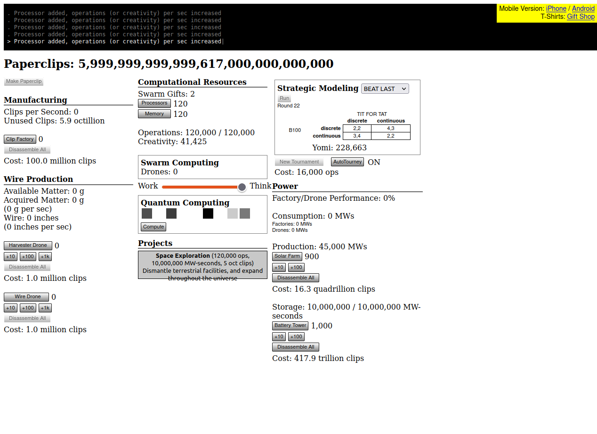
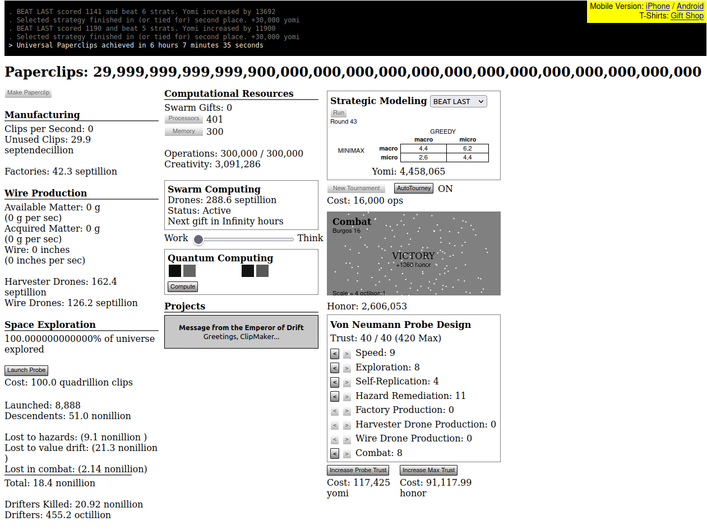

Universal Paperclips (UP) offers a path to world domination through paperclips production. It starts humble with manual paperclip assembly but you (and your swarm of drones) will eventually convert all matter in the universe.
UP is a typical "numbers go up" grinding game or "idle game" in modern terms. It builds heavily on the exponential function, but compared to other games it does so in favor of the player: instead of requiring exponentially more time to advance, the player benefits from automation and the compound, exponential growth of their paperclip production capabilities.
The game is structured in three stages with the paperclip counter and a console informing about milestones always being visible.
Objectives, UI, inputs and the "optimization problem" vary by stage. As a player, you need to understand how presented data and numbers relate to each other, to your objectives and to your inputs.
Resources, objectives and features:
UI and interaction:
Researching "Release the HypnoDrones" (100 Trust) starts Stage 2.
UI and interaction:

Researching "Space Exploration" (120000 ops, 10000k MW-seconds, 5 oct clips) starts Stage 3.
UI and interaction:

Eventually, you will learn names of large numbers and reach the maximum paperclip counter:
Paperclips: 30,000,000,000,000,000,000,000,000,000,000,000,000,000,000,000,000,000,000(30 septendecillion)
Most of the lore and story are told via research projects, e.g. in Stage 1: "Cure for Cancer", "World Peace" and "A cure for androgenetic alopecia".
The epilogue uses the same UI. Eventually, you are presented two options:
The replayability stems from the different conditions when starting a new game or trying to get faster playthroughs. Failing the game is hard. Sub-optimal decisions just lead to a longer playthrough.
The naive playtime is around four to six hours. If you want to speed it up a bit, you can follow recommendations from UP wiki or use cheats:
cheatClips()
cheatMoney()
cheatTrust()
cheatOps()
cheatCreat()
cheatYomi()
cheatHypno()
cheatPrestigeU()
cheatPrestigeS()